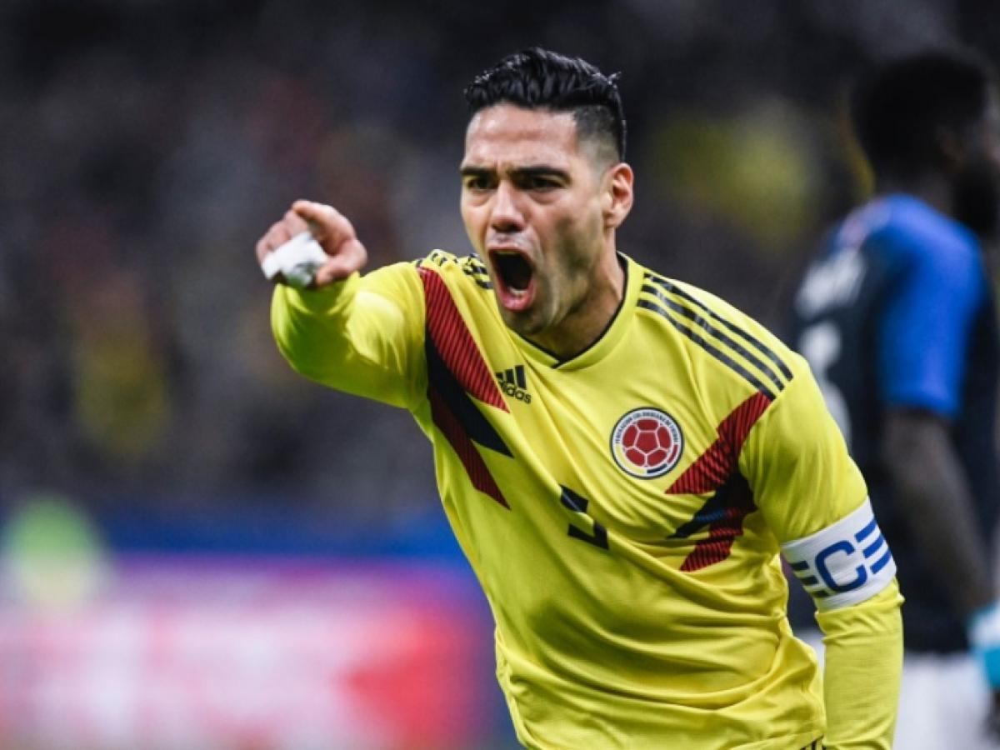

Radamel Falcao García Zárate (Santa Marta, Magdalena, 10 de febrero de 1986) es un futbolista colombiano que juega como delantero y su equipo actual es Millonarios de la Categoría Primera A de Colombia. Fue internacional con la selección colombiana, de la cual es su máximo goleador histórico. Debutó profesionalmente con trece años en el extinto club colombiano Lanceros Fair Play. Es el jugador que más goles ha anotado en una sola temporada de un torneo europeo, con diecisiete goles. Este récord lo comparte con Cristiano Ronaldo, quien marcó diecisiete goles durante la Liga de Campeones de la UEFA 2013-14. Tal récord lo logró con el F. C. Porto en la Liga Europea de la UEFA durante la temporada 2010-2011. En julio de 2011 fue considerado el quinto mejor futbolista en Europa (solo por detrás de Lionel Messi, Cristiano Ronaldo, Xavi Hernández y Andrés Iniesta) mediante una votación realizada por cincuenta y tres periodistas deportivos de las federaciones que forman parte de la UEFA.
Si desea conocer mas información sobre Radamel Falcao Garcia:
ingrese a este link